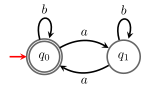
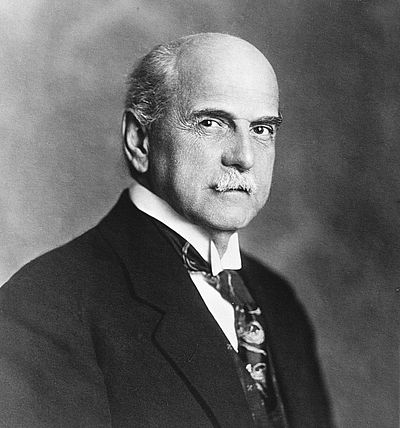

16 Context-Free Grammars
The content of this part is still under development and will be updated during the course.
In this chapter we introduce context-free grammars and the class of languages they generate, the context-free languages. We also introduce some important properties of context-free languages, such as closure properties and normal forms.
Definition 16.1 A context-free grammar (CFG) is a tuple G=(V,\Sigma,R,S) where
- V is a finite set of symbols called variables (or non-terminals),
- \Sigma is a finite set of symbols called terminals such that V\cap \Sigma=\emptyset,
- R is a finite set of production rules of the form A\ \boldsymbol{\to}\ \alpha where A\in V and \alpha\in (V\cup \Sigma)^*, and
- S\in V is the start variable.
Usually production rules on the same variable are grouped together and we write A\ \boldsymbol{\to}\ \alpha_1\ \vert\ \alpha_2\ \vert\ \ldots\ \vert\ \alpha_k instead of writing k rules A\ \boldsymbol{\to}\ \alpha_1,\dots,A\ \boldsymbol{\to}\ \alpha_k.
Example 16.1 Consider the context-free grammar G=(\{S\},\{\textcolor{darkred}{\mathtt{a}},\textcolor{darkred}{\mathtt{b}}\},\{S\ \boldsymbol{\to}\ \textcolor{darkred}{\mathtt{a}}S\ \vert\ \textcolor{darkred}{\mathtt{b}}S\ \vert\ \varepsilon\},S). This is a context-free grammar with one variable S, two terminals \textcolor{darkred}{\mathtt{a}} and \textcolor{darkred}{\mathtt{b}}, and three production rules. The start variable is S.
To define the language generated by a context-free grammar we first need to define the derivation relation. Given a context-free grammar G=(V,\Sigma,R,S), the derivation relation \Rightarrow is a binary relation on (V\cup \Sigma)^* defined as follows: for any u,v\in (V\cup \Sigma)^*, A\in V, and \alpha\in (V\cup \Sigma)^*, we have uAv\Rightarrow u\alpha v if A\ \boldsymbol{\to}\ \alpha\in R. If w_0,w_1,\dots,w_n\in (V\cup \Sigma)^* are such that w_i\Rightarrow w_{i+1} for all i=0,1,\dots,n-1, then we write w_0\Rightarrow^* w_n and we say that w_n is derivable from w_0. The number n is the number of steps of the derivation.
Example 16.2 Consider the context-free grammar from Example 16.1. Then for example, we have \textcolor{darkred}{\mathtt{a}}S\textcolor{darkred}{\mathtt{b}}\Rightarrow \textcolor{darkred}{\mathtt{a}}\textcolor{darkred}{\mathtt{b}}S\textcolor{darkred}{\mathtt{b}} because of the rule S\ \boldsymbol{\to}\ \textcolor{darkred}{\mathtt{b}}S. Also, we have \textcolor{darkred}{\mathtt{a}}S\textcolor{darkred}{\mathtt{b}}\Rightarrow \textcolor{darkred}{\mathtt{a}}\varepsilon\textcolor{darkred}{\mathtt{b}}=\textcolor{darkred}{\mathtt{a}}\textcolor{darkred}{\mathtt{b}} because of the rule S\ \boldsymbol{\to}\ \varepsilon.
Definition 16.2 The language generated by a context-free grammar G=(V,\Sigma,R,S) is the set of words over \Sigma that can be derived from the start variable S using the production rules in R:
\mathscr{L}(G)=\{w\in \Sigma^* :S\Rightarrow^* w\}.
Given a context-free grammar G, deciding what is the language generated \mathscr{L}(G) is a difficult problem! There is no algorithm that decides whether \mathscr{L}(G)=\{\textcolor{darkred}{\mathtt{a}},\textcolor{darkred}{\mathtt{b}}\}^* or if \mathscr{L}(G)\in \mathbf{Regular}! But there are algorithms to decide whether \mathscr{L}(G)=\emptyset.
Let’s see a couple of examples. In the first one (Example 16.3) we are given a context-free grammar and we want to find the language it generates. In the second one (Example 16.4) we are given a language and we want to find a context-free grammar that generates it.
Example 16.3 The language generated by the context-free grammar from Example 16.1 is \mathscr{L}(G)=\{\textcolor{darkred}{\mathtt{a}},\textcolor{darkred}{\mathtt{b}}\}^*, the set of all words over the alphabet \{\textcolor{darkred}{\mathtt{a}},\textcolor{darkred}{\mathtt{b}}\}.
Example 16.4 \{\textcolor{darkred}{\mathtt{a}}^n\textcolor{darkred}{\mathtt{b}}^n :n\in \mathbb{N}\}\in \mathbf{CFL}.
A context-free grammar generating this language is G=(\{S\},\{\textcolor{darkred}{\mathtt{a}},\textcolor{darkred}{\mathtt{b}}\},\{S\ \boldsymbol{\to}\ \textcolor{darkred}{\mathtt{a}}S\textcolor{darkred}{\mathtt{b}}\ \vert\ \varepsilon\},S).
Notice that in both examples we had a claim of the form \mathscr{L}(G)=L and we proved it by proving the two containments \mathscr{L}(G)\subseteq L and \mathscr{L}(G)\supseteq L. This is a common technique to prove that a context-free grammar generates a given language.
The containment \mathscr{L}(G)\subseteq L is usually proved by induction on the number of derivation steps. To make the induction work it is often needed to transform the grammar G into an equivalent one G' that is in a certain normal form, for example to ensure that at each derivation step the length of the words strictly increses (see Section 18.1).
The containment \mathscr{L}(G)\supseteq L is usually proved by induction on the length of the words in L (or some related parameter).
Exercise 16.1 Show that \{w\in \{\textcolor{darkred}{\mathtt{a}},\textcolor{darkred}{\mathtt{b}}\}^* :w=w^R\}\in \mathbf{CFL}.
So far we have seen grammars that only have one variable. Let’s see some simple example with more than one variable.
Example 16.5 \{\textcolor{darkred}{\mathtt{a}}^n\textcolor{darkred}{\mathtt{b}}^m :n,m\in \mathbb{N}\}\in \mathbf{CFL}.
A context-free grammar generating this language is G=(\{S,A,B\},\{\textcolor{darkred}{\mathtt{a}},\textcolor{darkred}{\mathtt{b}}\},\{S\ \boldsymbol{\to}\ AB,A\ \boldsymbol{\to}\ \textcolor{darkred}{\mathtt{a}}A\ \vert\ \varepsilon,B\ \boldsymbol{\to}\ \textcolor{darkred}{\mathtt{b}}B\ \vert\ \varepsilon\},S).
Often grammars are presented just writing down the production rules, for example, the grammar above can be presented as follows:
\begin{array}{rcl} S\ &\boldsymbol{\to}&\ AB\\ A\ &\boldsymbol{\to}&\ \textcolor{darkred}{\mathtt{a}}A\ \vert\ \varepsilon\\ B\ &\boldsymbol{\to}&\ \textcolor{darkred}{\mathtt{b}}B\ \vert\ \varepsilon \end{array} where it is understood that the set of variables is \{S,A,B\}, the set of terminals is \{\textcolor{darkred}{\mathtt{a}},\textcolor{darkred}{\mathtt{b}}\}, and the start variable is S (the variable on the left of the first rule).
Let G_A be the same grammar as G but with start variable A and let G_B be the same grammar as G but with start variable B. Then we have \mathscr{L}(G_A)=\{\textcolor{darkred}{\mathtt{a}}^n :n\in \mathbb{N}\} and \mathscr{L}(G_B)=\{\textcolor{darkred}{\mathtt{b}}^m :m\in \mathbb{N}\}, so that \mathscr{L}(G)=\mathscr{L}(G_A)\cdot \mathscr{L}(G_B)=\{\textcolor{darkred}{\mathtt{a}}^n\textcolor{darkred}{\mathtt{b}}^m :n,m\in \mathbb{N}\}.
An equivalent grammar G' also generating the desired language is
\begin{array}{lcl} S'\ &\boldsymbol{\to}&\ S\ \vert\ \varepsilon\\ S\ &\boldsymbol{\to}&\ AB\ \vert\ A\ \vert\ B\\ A\ &\boldsymbol{\to}&\ \textcolor{darkred}{\mathtt{a}}A\ \vert\ \textcolor{darkred}{\mathtt{a}}\\ B\ &\boldsymbol{\to}&\ \textcolor{darkred}{\mathtt{b}}B\ \vert\ \textcolor{darkred}{\mathtt{b}} \end{array}
Exercise 16.2 \{\textcolor{darkred}{\mathtt{a}}^n\textcolor{darkred}{\mathtt{b}}^m :n\neq m\}\in \mathbf{CFL}.
We can write \{\textcolor{darkred}{\mathtt{a}}^n\textcolor{darkred}{\mathtt{b}}^m :n\neq m\}=\{\textcolor{darkred}{\mathtt{a}}^n\textcolor{darkred}{\mathtt{b}}^m :n> m\}\cup \{\textcolor{darkred}{\mathtt{a}}^n\textcolor{darkred}{\mathtt{b}}^m :n< m\} and then we can find a context-free grammar for each of the two languages on the right.
16.1 \mathbf{Regular}\subsetneq \mathbf{CFL}
In this section we prove that every regular language is also a context-free language and if the alphabet has size at least 2 then there is a language that is context-free but not regular. We do this via guided exercises that incidentally use closure properties of context-free languages to prove the result.
Exercise 16.3 (🏔️) The goal of this exercise is to show that \mathbf{Regular}\subseteq \mathbf{CFL}. Thanks to Exercise 13.3, to show that \mathbf{Regular}\subseteq \mathbf{CFL} it is enough to show that
- \mathbf{CFL} contains \emptyset;
- \mathbf{CFL} contains \{\varepsilon\};
- \mathbf{CFL} contains \{\textcolor{darkred}{\mathtt{s}}\} for each symbol \textcolor{darkred}{\mathtt{s}}\in \Sigma;
- \mathbf{CFL} is closed under union;
- \mathbf{CFL} is closed under concatenation;
- \mathbf{CFL} is closed under Kleene star.
Now, is \mathbf{Regular}\neq \mathbf{CFL}?
In general yes, they are different but not always. It depends on the alphabet size. In fact, if |\Sigma|=1, then \mathbf{Regular}= \mathbf{CFL}. However, if \Sigma=\{\textcolor{darkred}{\mathtt{a}},\textcolor{darkred}{\mathtt{b}}\}, then \mathbf{Regular}\subsetneq \mathbf{CFL}. In fact, the language \{\textcolor{darkred}{\mathtt{a}}^n \textcolor{darkred}{\mathtt{b}}^n : n\in \mathbb{N}\} is context-free but not regular (see Example 14.1 and Example 16.4).
Exercise 16.4
- Show that \mathbf{CFL} is closed under homomorphisms.
- Show that if |\Sigma|>1, then \mathbf{Regular}\subsetneq \mathbf{CFL}.
The fact that if |\Sigma|=1, then \mathbf{Regular}= \mathbf{CFL} is not obvious and it is a consequence of Parikh’s theorem. We will not prove this theorem in this course. The fact that for |\Sigma|=1 some classes of languages coincide is the reason why in The Big Picture Figure 4.2 we decided to show inclusions between classes of languages for a binary alphabet.

The proof that \mathbf{Regular}\subseteq \mathbf{CFL} from Exercise 16.3 does not give a direct way to construct a context-free grammar G for a given regular language L when L is presented giving a DFA. In the next exercise we show how to do this.
Exercise 16.5 Given a DFA A=(Q,\Sigma,\{q_0\},F,\delta) with Q=\{q_0,\dots,q_n\}, consider the grammar G=(V,\Sigma,R,R_0) s.t.
- V=\{R_0,\dots,R_n\},
- the productions rules R are \{R_i\ \boldsymbol{\to}\ \varepsilon:q_i\in F\}\,\cup\, \{R_i\ \boldsymbol{\to}\ \textcolor{darkred}{\mathtt{s}}R_j:\delta(q_i,\textcolor{darkred}{\mathtt{s}})=q_j\}\ .
Show that \mathscr{L}(A)=\mathscr{L}(G).
Example 16.6 A grammar for the DFA

is
\begin{array}{lcl} R_0\ &\boldsymbol{\to}&\ \textcolor{darkred}{\mathtt{b}}R_0\ \vert\ \textcolor{darkred}{\mathtt{a}}R_1\ \vert\ \varepsilon\\ R_1\ &\boldsymbol{\to}&\ \textcolor{darkred}{\mathtt{b}}R_1\ \vert\ \textcolor{darkred}{\mathtt{a}}R_0 \end{array}
16.2 Closure Properties
In this section we give a list of closure properties of context-free languages. Some of them have been already used in the previous sections and some of them we will see in future sections, but we give a more complete list here.
| is \mathbf{CFL} closed under | ||
|---|---|---|
| union? | yes ✅ | Exercise 16.3 |
| concatenation? | yes ✅ | Exercise 16.3 |
| Kleene star? | yes ✅ | Exercise 16.3 |
| intersection? | no ❌ | Theorem 21.1 |
| intersection with a regular language? | yes ✅ | Theorem 19.1 |
| complement? | no ❌ | Theorem 21.2 |
| reversal? | yes ✅ | Exercise 16.6 |
| homomorphism? | yes ✅ | Exercise 16.4 |
| inverse homomorphism? | yes ✅ | Theorem 19.2 |
Exercise 16.6 Show that \mathbf{CFL} is closed under reversal, that is, if L\in \mathbf{CFL}, then L^R\in \mathbf{CFL}.
16.3 Well-balanced parentheses
We conclude this chapter with a notable language in \mathbf{CFL}: the language of well-balanced parentheses. This a prototypical example of context-free language: the language of words that are well-balanced parentheses.
Definition 16.3 (Well-balanced parentheses) The language of well-balanced parentheses is the language \mathsf{Dyck}\text{-}1\subseteq\{\textcolor{darkred}{\mathtt{(}},\textcolor{darkred}{\mathtt{)}}\}^* with the following properties: \mathsf{Dyck}\text{-}1 is the smallest (w.r.t. inclusion) language L\subseteq\{\textcolor{darkred}{\mathtt{(}},\textcolor{darkred}{\mathtt{)}}\}^* s.t.
- \varepsilon\in L;
- if x,y\in L then xy\in L;
- if x\in L, then \textcolor{darkred}{\mathtt{(}}x\textcolor{darkred}{\mathtt{)}}\in L.
From this recursive definition it is immediate to get a context-free grammar G generating \mathsf{Dyck}\text{-}1:
\begin{array}{lcl} S\ &\boldsymbol{\to}&\ SS\ \vert\ \textcolor{darkred}{\mathtt{(}}S\textcolor{darkred}{\mathtt{)}}\ \vert\ \varepsilon\ . \end{array} \tag{16.1}
Exercise 16.7 Show that \mathscr{L}(G)=\mathsf{Dyck}\text{-}1, where G is the grammar in Equation 16.1.

Exercise 16.8 Show that
\mathsf{Dyck}\text{-}1=\{w\in \{\textcolor{darkred}{\mathtt{(}},\textcolor{darkred}{\mathtt{)}}\}^* :|w|_{\textcolor{darkred}{\mathtt{(}}}=|w|_{\textcolor{darkred}{\mathtt{)}}}\land \forall x,y (w=xy\implies |x|_{\textcolor{darkred}{\mathtt{(}}}\geq |x|_{\textcolor{darkred}{\mathtt{)}}})\}\ , that is w\in \mathsf{Dyck}\text{-}1 if and only if it has the same number of open and closed parentheses and in every prefix of w, the number of open parentheses is always greater than or equal to the number of closed parentheses.
Exercise 16.9 Generalize the construction in Definition 16.3 to get \mathsf{Dyck}\text{-}s, that is the language of well-balanced parentheses but now instead of having only 1 type of parentheses we have s types of parentheses. For example, \textcolor{darkred}{\mathtt{[([]())]()}}\in \mathsf{Dyck}\text{-}2 but \textcolor{darkred}{\mathtt{([)]}}\notin\mathsf{Dyck}\text{-}2. Construct a grammar for \mathsf{Dyck}\text{-}2 and in general for \mathsf{Dyck}\text{-}s.
The language \mathsf{Dyck}\text{-}s is important because it is the most difficult context-free language, in the following sense.
Theorem 16.1 (Chomsky–Schützenberger representation theorem) A language L\subseteq \Sigma^* is in \mathbf{CFL} if and only if
L=\sigma(\mathsf{Dyck}\text{-}s\cap R)\ , where s\geq 1, R is a regular language (over the alphabet of \mathsf{Dyck}\text{-}s \Gamma_s), and \sigma is a homomorphism from \Gamma_s to \Sigma^*.

Although this result characterizes \mathbf{CFL}, to show that a language L\in \mathbf{CFL} it is easier to just construct a context-free grammar generating L and to show that L\notin\mathbf{CFL} we will use the Pumping Lemma (see Chapter 21). We mention this result here just to highlight the importance of the \mathsf{Dyck}\text{-}s languages.